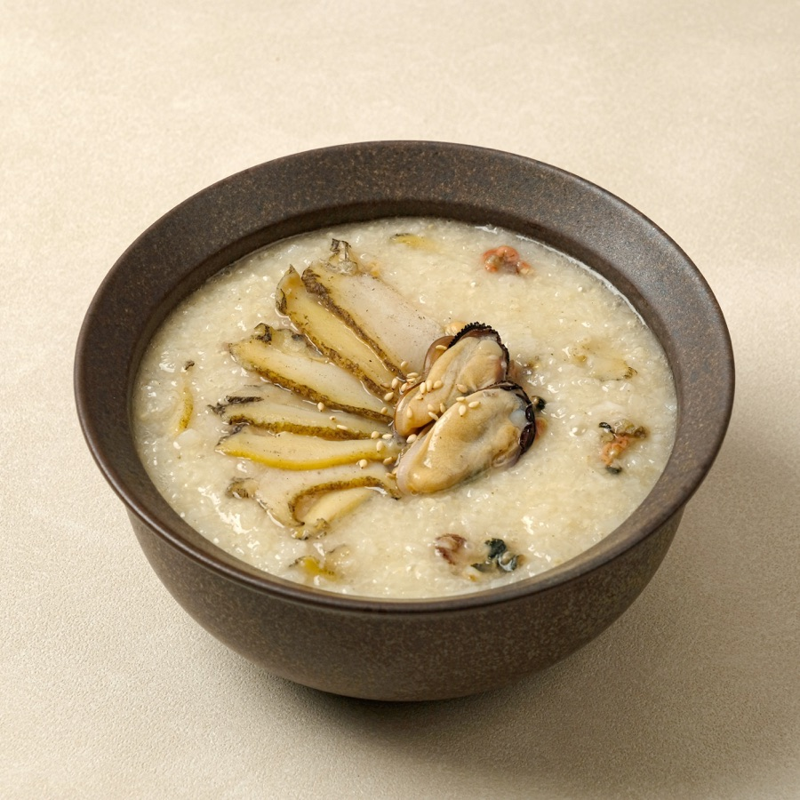
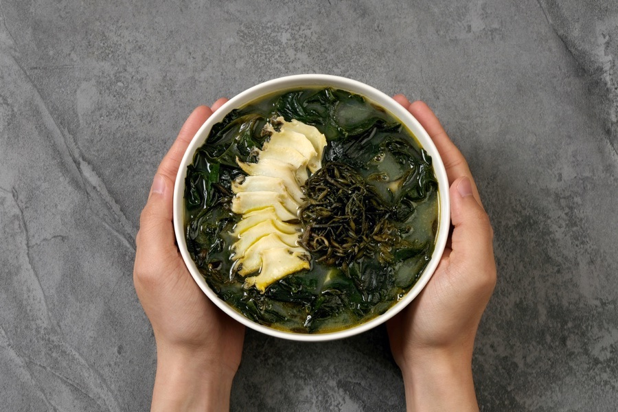
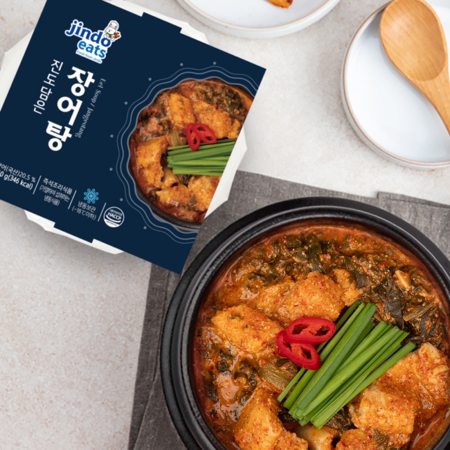

Abalone Porridge
A comforting rice porridge made with abalone.
OUR PRODUCTS

A comforting rice porridge made with abalone.

A classic Korean soup with abalone and seaweed.

A hearty Korean soup made with eel.

FOODSERVICE & WHOLESALE
Cooked abalone for foodservice and meal manufacturers. Contact us about sliced formats.